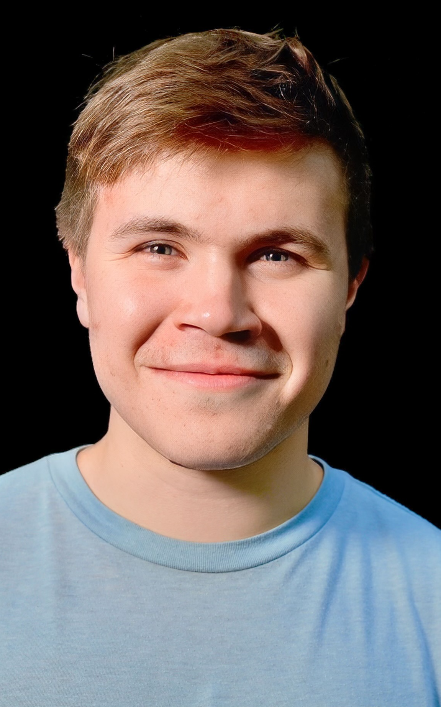

About
 Hello, my name is Ben. I am a computational physicist broadly interested in using machine learning to ameliorate the physical sciences, and in using an understanding of the physical sciences to do better machine learning. I'm pursuing an MPhil in Chemistry at the University of Cambridge, advised by Prof. Tuomas Knowles & Ph.D. candidates Alex Abrudan and Rob Scrutton. I also graduated from Harvard College with an A.B. in Physics in May, 2024.
Outside of my studies, I work at Sandbox AQ, an Alphabet spinnout addressing scientific problems with AI-based solutions. There, I am a Simulation & Optimization resident. Unfortunately, I cannot say more, as I am under a legally-binding NDA. I previously interned at W~Agi, a computational neuroscience startup looking to build more biologically plausible artificial intelligence. There, I showed that simple prediction and noise (PaN) networks could follow trails without an explicit global error function and in a biologically plausible manner. Despite its apparent simplicity, this task is remarkably difficult for conventional reinforcement learning. Our networks solved the task remarkably quickly and with less than 1/1000th of the data.
As an undergrad, I worked in the Weitz lab, where I developed a filament detection algorithm when our standard one failed; this produced results featured in a paper, supporting the conclusion that phase seperated vimentin droplets wet actin stress fibers strongly enough to prevent the break down of those fibers by drugs like Cytochalasin B. Before that, I was a research assistant in Prof. Jonathan Grindlay's lab, where I developed a python package to calculate and display regions of sky visible to an array of satellites evenly spaced in a circular orbit, though I no longer work in astronomy (and do not anticipate doing so in the future).
Outside of work, I enjoy studying language etymology, heraldry, classical and medieval history. I also enjoy writing music, both classical and modern. I am a Christian, and find myself increasingly drawn to theology, but I am still very much a novice in this regard